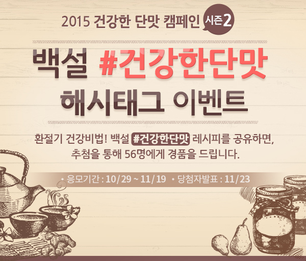
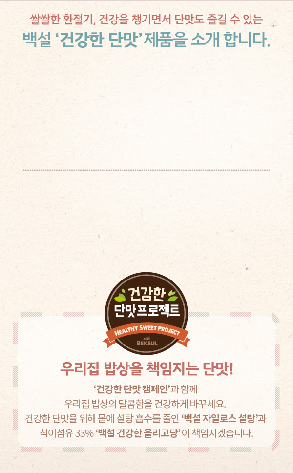
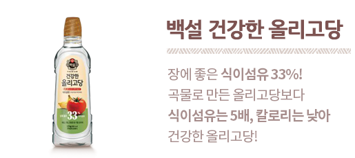
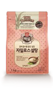
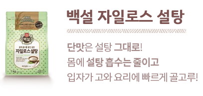
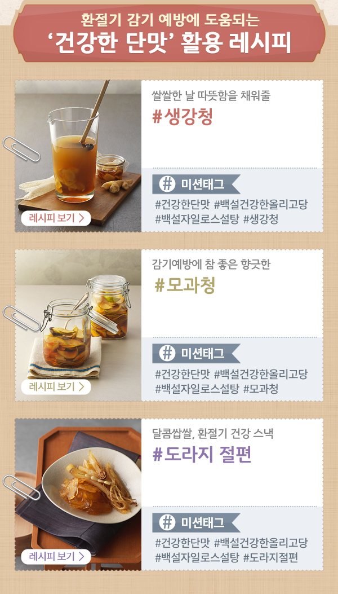
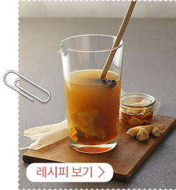
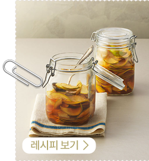
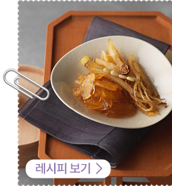
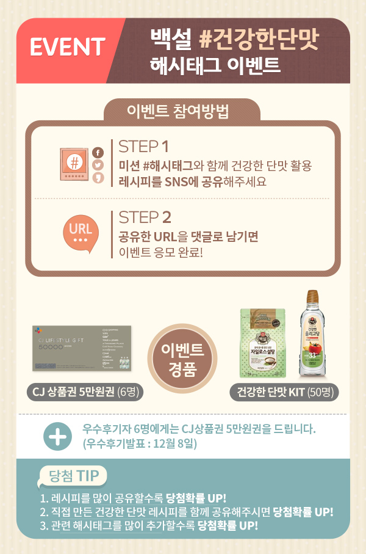

환절기 건강비법! 백설 #건강한단맛 레시피를 공유하면,
추첨을 통해 56명에게 경품을 드립니다.
- 응모기간
- 10월 29일 ~ 11월 19일
- 당첨자발표
- 11월 23일

쌀쌀한 환절기 건강을 챙기면서 단맛도 즐길 수 있는 백설 '건강한 단맛' 제품을 소개합니다.

장에 좋은 식이섬유 33%!
곡물로 만든 올리고당보다
식이섬유는 5배, 칼로리는 낮아
건강한 올리고당!


단맛은 설탕 그대로! 몸에
설탕 흡수는 줄이고 입자가
고와 요리에 빠르게 골고루!
건강한 단맛 프로젝트-HEALTHY SWEET PROJECT
우리집 밥상을 책임지는 단맛!
'건강한 단맛 캠페인'과 함께 우리집 밥상의 달콤함을 건강하게 바꾸세요.
건강한 단맛을 위해 몸에 설탕 흡수를 줄인 '백설 자일로스 설탕'과
식이섬유 33% '백설 건강한 올리고당'이 책임지겠습니다.


생강청은 이럴 때 좋아요~
몸을 따뜻하게 해주어 환절기 감기
예방에 좋은 생강. 생강차 한 잔으로
온 가족 건강을 지킬 수 있어요
생강청 레시피 보기
#미션 태그
#건강한단맛 #백설건강한올리고당 #백설자일로스설탕 #생강청

모과청은 이럴 때 좋아요~
비타민C가 풍부해 감기예방에 좋은 모과.
모과청으로 모과차를 만들고 환절기
건강을 챙길 수 있어요
모과청 레시피 보기
#미션 태그
#건강한단맛 #백설건강한올리고당 #백설자일로스설탕 #모과청

도라지절편은 이럴 때 좋아요~
기침, 가래 등 기관지에 좋은 도라지.
도라지의 쌉쌀한 맛과 달콤함이 어우러져
온 가족이 즐길 수 있어요
도라지절편 레시피 보기
#미션 태그
#건강한단맛 #백설건강한올리고당 #백설자일로스설탕 #도라지절편

EVENT. 백설 #건강한단맛 해시태그 이벤트
이벤트 참여방법
- STEP1. 미션 #해시태그와 함께 건강한 단맛 활용 레시피를 SNS에 공유해주세요
- STEP2. 공유한 URL을 댓글로 남기면 이벤트 응모 완료!
이벤트 경품
- CJ 상품권 5만원권 (6명)
- 건강한 단맛 KIT (50명)
- 우수후기자 6명에게는 CJ상품권 5만원권을 드립니다. (우수후기발표 : 12월 8일)
당첨 TIP
- 1. 레시피를 많이 공유할수록 당첨확률 UP!
- 2. 직접 만든 건강한 단맛 레시피를 함께 공유해주시면 당첨확률 UP!
- 3. 관련 해시태그를 많이 추가할수록 당첨확률 UP!